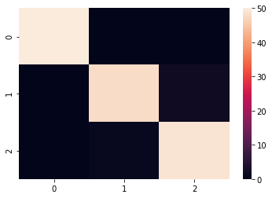

Mutl-Class Precision and Recall¶
In [1]:
from sklearn import datasets
from sklearn.neighbors import KNeighborsClassifier
import pandas as pd
In [2]:
from sklearn.metrics import confusion_matrix
In [3]:
iris = datasets.load_iris()
X = iris.data
y = iris.target
In [4]:
knn = KNeighborsClassifier(n_neighbors=3)
In [5]:
knn.fit(X, y)
Out[5]:
KNeighborsClassifier(algorithm='auto', leaf_size=30, metric='minkowski',
metric_params=None, n_jobs=1, n_neighbors=3, p=2,
weights='uniform')
In [6]:
pred = knn.predict(X)
In [7]:
confusion_matrix(y, pred)
Out[7]:
array([[50, 0, 0],
[ 0, 47, 3],
[ 0, 3, 47]])
In [12]:
from sklearn.metrics import precision_recall_curve, precision_score, recall_score
from sklearn.model_selection import cross_val_predict, cross_val_score
In [14]:
y_pred = cross_val_predict(knn, X, y)
In [15]:
conf_mx = confusion_matrix(y, y_pred)
In [16]:
conf_mx
Out[16]:
array([[50, 0, 0],
[ 0, 48, 2],
[ 0, 1, 49]])
In [19]:
%matplotlib inline
import matplotlib.pyplot as plt
import seaborn as sns
sns.heatmap(conf_mx)
Out[19]:
<matplotlib.axes._subplots.AxesSubplot at 0x118845860>

Precision¶
Recall¶
Precision and Recall: F1¶
In [24]:
from sklearn.metrics import classification_report
In [27]:
print(classification_report(y, y_pred))
precision recall f1-score support
0 1.00 1.00 1.00 50
1 0.98 0.96 0.97 50
2 0.96 0.98 0.97 50
avg / total 0.98 0.98 0.98 150
In [26]:
confusion_matrix(y, y_pred)
Out[26]:
array([[50, 0, 0],
[ 0, 48, 2],
[ 0, 1, 49]])
Titanic¶
- Describe Titanic Task
In [32]:
titanic_train = pd.read_csv('data/titanic_train.csv', index_col=0)
In [33]:
titanic_train.head()
Out[33]:
| Survived | Pclass | Name | Sex | Age | SibSp | Parch | Ticket | Fare | Cabin | Embarked | |
|---|---|---|---|---|---|---|---|---|---|---|---|
| PassengerId | |||||||||||
| 1 | 0 | 3 | Braund, Mr. Owen Harris | male | 22.0 | 1 | 0 | A/5 21171 | 7.2500 | NaN | S |
| 2 | 1 | 1 | Cumings, Mrs. John Bradley (Florence Briggs Th... | female | 38.0 | 1 | 0 | PC 17599 | 71.2833 | C85 | C |
| 3 | 1 | 3 | Heikkinen, Miss. Laina | female | 26.0 | 0 | 0 | STON/O2. 3101282 | 7.9250 | NaN | S |
| 4 | 1 | 1 | Futrelle, Mrs. Jacques Heath (Lily May Peel) | female | 35.0 | 1 | 0 | 113803 | 53.1000 | C123 | S |
| 5 | 0 | 3 | Allen, Mr. William Henry | male | 35.0 | 0 | 0 | 373450 | 8.0500 | NaN | S |